Dr. Tahani Al Musallam
Consultant Orthodontist
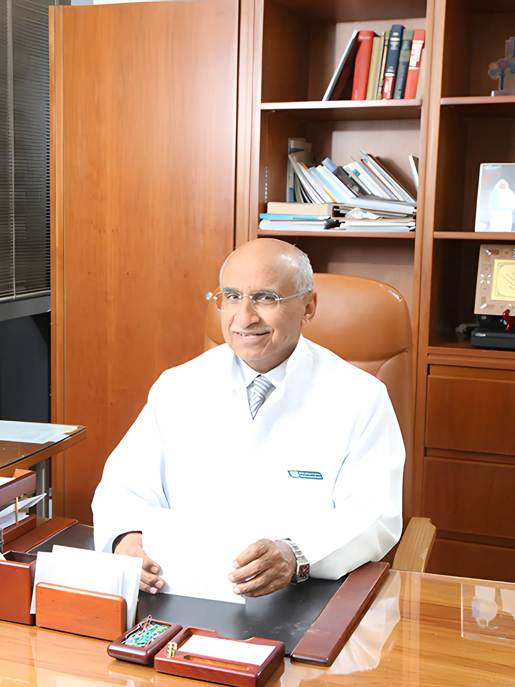
Dr. Faisal Al Fozan opened Kuwait's first private dental clinic in 1976. Fifty years on, our dentists see whole families on the 7th floor of Al-Andalus Complex in Hawally: check-ups and cleaning, braces, implants, crowns, and a children's floor of its own.
Dr. Faisal Al Fozan opened Kuwait's first private dental clinic in 1976. Al Fozan Dental Centre carries it on today with a team of general dentists, orthodontists, prosthodontists and an endodontist.
Examination, treatment, X-ray and laboratory work all happen here, in one centre in Hawally.
نفخر باختياركم لنا لأجيال عديدة
"We take pride in being your choice for many generations."
The line on our clinic wall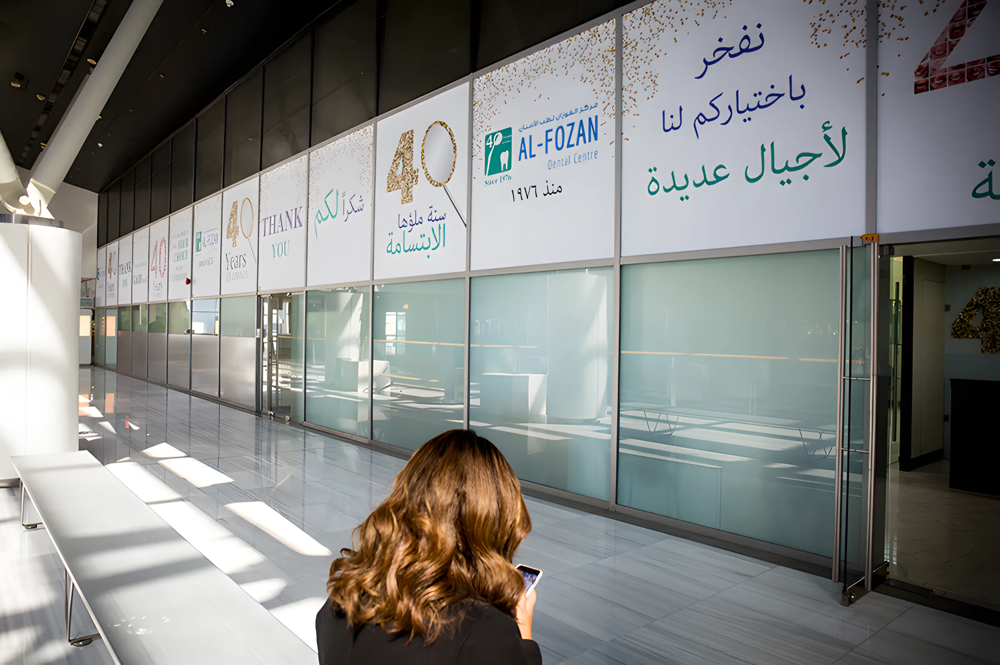
Fourteen treatments under one roof. Tap one for what it involves, or see the full treatments page.
A full exam at your first visit, then regular check-ups with the dentist and hygienist.


X-rays and impressions first, then the implant is placed while the area is numb and left to heal into the bone before the tooth is fitted. It takes several visits over a few months.

Four of our dentists are orthodontists. They treat crooked and crowded teeth, overbites, underbites and jaw position, with fixed or removable braces.

Twelve dentists work with our founder, Dr. Faisal Al Fozan: general dentists, orthodontists, prosthodontists and an endodontist for root canal work. Ask for any of them by name when you call 1801033.
Consultant Orthodontist

Consultant Prosthodontist
Specialist Orthodontist
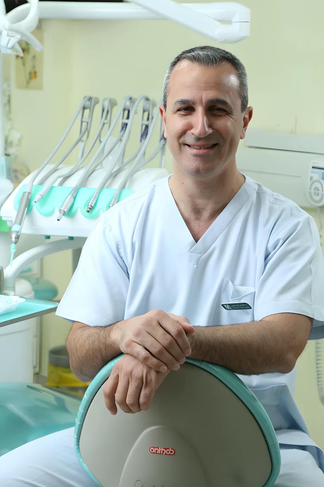
Specialist Orthodontist
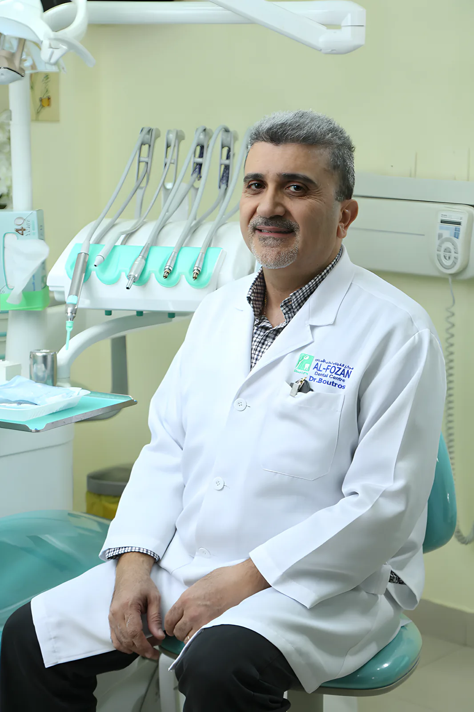
Specialist Endodontist

Specialist Prosthodontist
Specialist Prosthodontist
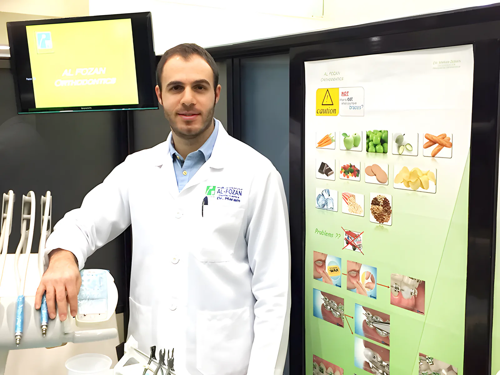
Registered Orthodontist
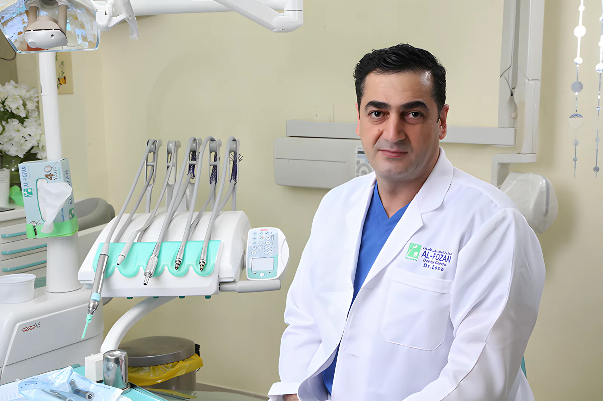
General Dentist

General Dentist
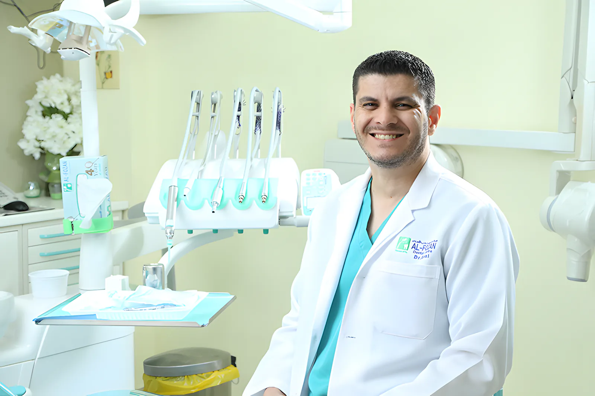
General Dentist
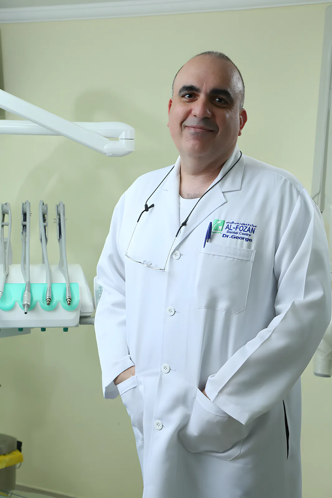
General Dentist
Children wait in their own room, with a toy car, beanbags and a chalk wall, and are seen in a striped treatment room built for them. We want the first visit to be an easy one, and we work on stopping decay before it starts.
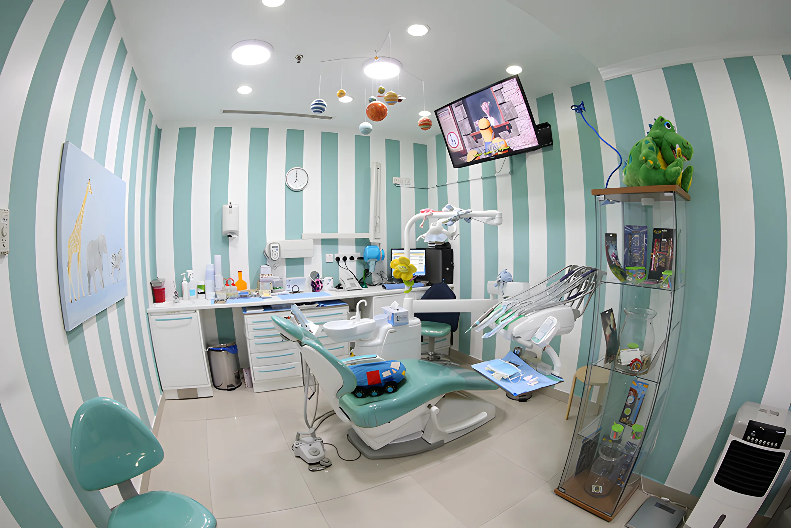
Drag or swipe through the rooms before your first visit.
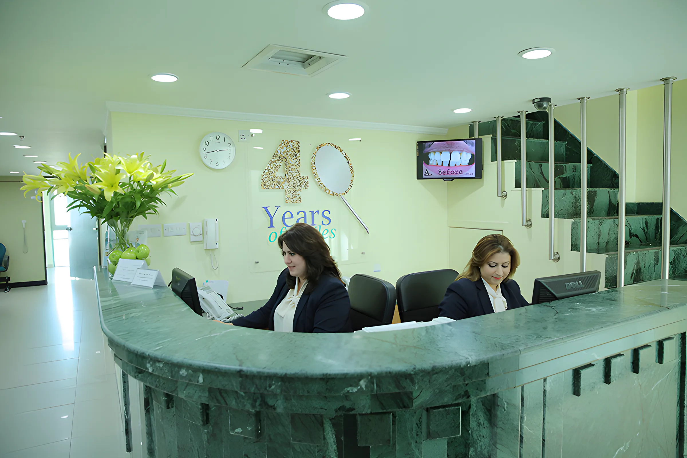
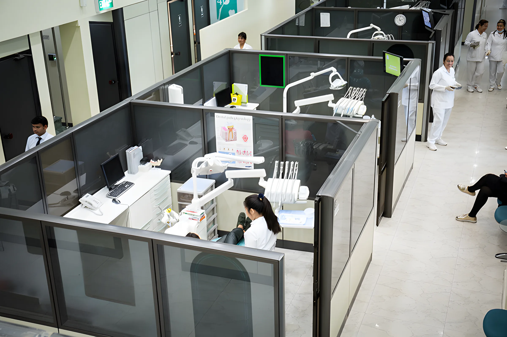


7th floor, Al-Andalus Complex, Beirut Street, Hawally, Kuwait
Take the lift in Al-Andalus Complex to the 7th floor. Our glass frontage with the green Al-Fozan sign is on the corridor.